#7887 Knife Fight - Die Gier nach Macht
Alternativ: Knife Fight
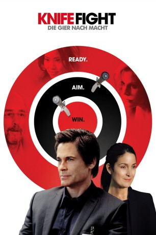 
 IMDB-Wertung: 5.1 / 10
IMDB-Wertung: 5.1 / 10  Metascore: 0
Metascore: 0 
Wenn es darum geht, einem Politiker den bestmöglichen Wahlkampf zu bescheren, ist der versierte Stratege Paul Turner der Beste, den man konsultieren kann. Zusammen mit seiner brillanten jungen Assistentin Kerstin Rhee rückt er jeden noch so korrupten Politiker in ein günstiges Licht, egal ob gerade dunkle Geheimnisse aus der Vergangenheit offengelegt wurden oder ob der Kandidat sonst irgendeinen Fehltritt begangen hat. Mit äußerst einfallsreichen, aber nicht immer ganz legalen Methoden schafft es Paul zugleich, den politischen Gegner seines jeweiligen Kunden möglichst schlecht aussehen zu lassen. Doch dann erfährt der gewiefte Stratege von einer Erpressung, die er möglicherweise selbst in Gang gesetzt hat und möchte sich aus dem Geschäft zurückziehen - aber mit all den Geheimnissen, die er kennt, ist das leichter gesagt als getan.
Jahr: 2012
Dauer: 94 Minuten
FSK: 12
Land: USA Studio: IFC FilmsTonspuren: DTS - ,
Untertitel:
Auflösung: 1080p (1920x1080) Größe: 5263 MB
Genre: Drama
Regisseur: Bill Guttentag
Drehbuch: Bill Guttentag
Soundtrack: Sister Bliss
Darsteller:
- 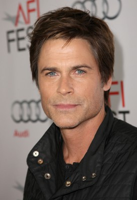 Rob Lowe als Paul Turner
- 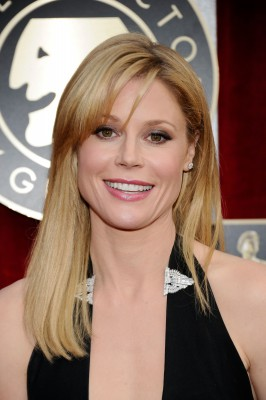 Julie Bowen als Peaches O'Dell
- Saffron Burrows als Sophia
- 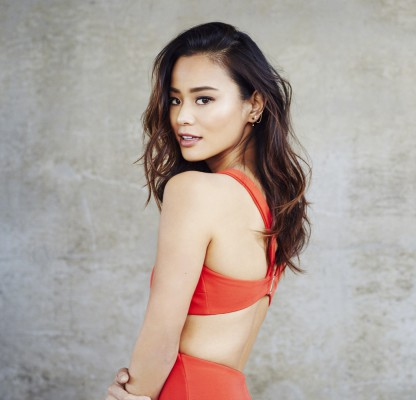 Jamie Chung als Kerstin Rhee
- 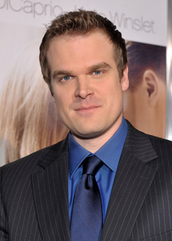 David Harbour als Stephen Green
- Eric McCormack als Larry Becker
 Jennifer Morrison als Angela Anderson
Jennifer Morrison als Angela Anderson- 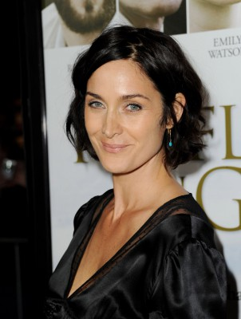 Carrie-Anne Moss als Penelope Nelson
 Richard Schiff als Dimitris Vargas
Richard Schiff als Dimitris Vargas- Amanda Crew als Helena St. John
 Michelle Krusiec als Shannon Haung
Michelle Krusiec als Shannon Haung Chris Mulkey als Roger Fillmore
Chris Mulkey als Roger Fillmore- Davey Havok als Jimmy McSorley
- Eddie George als Tony Blanchard
- Brooke Newton als Tawny Shearson
- Alan M. Dershowitz als Erik - Tawny's Lawyer
- Howard Kurtz als Trevor - Blogger
- 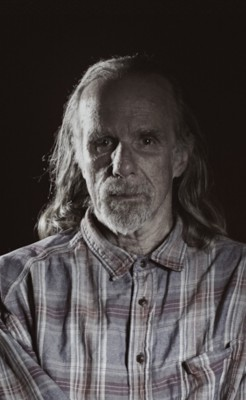 David Fine als Tommy
- 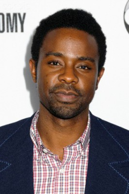 Brandon Scott als Max
- 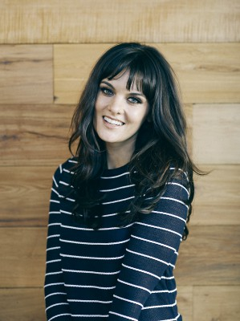 Frankie Shaw als Samantha
- Melissa Stephens als Christina - Kentucky Club Dancer
- Ryan Alosio als Johnny Duncan
- Cynthia Popper als Ana - Kentucky TV Reporter
- Chris Lehane als Gas Prices Reporter
- Kurt Yaeger als Oliver Kennedy
- Sarah Poynter als Daisy Green
- Ella Dershowitz als Ariel Becker
 Rosalind Chao als Kate - Focus Group Moderator
Rosalind Chao als Kate - Focus Group Moderator- 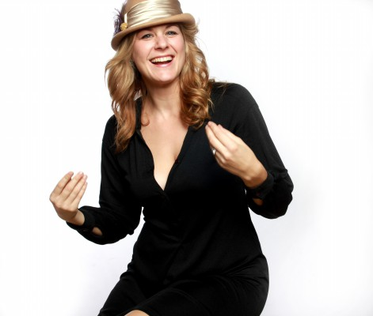 Jenica Bergere als Molly
- Lisa Pepper als Amy
- Sara Mornell als Janice
- Luke Rampersad als Barista
- Tina D'Elia als Boston Waitress
- Suilma Rodriguez als Penelope's Nurse #1
- Robert George Nelson als Hank Harrison
- Zachary Culbertson als Man in Sunglasses (uncredited)
- Jimmy Giliberti als Journalist (uncredited)
- Malaak Hattab als Homeless Kid (uncredited)
- Shaylee Koontz als Club Hostess (uncredited)
- Mary Ann Lumba als Medical Patient (uncredited)
- Maura Mannle als Penelope's Friend (uncredited)
- Shirley Manson als Nicole (uncredited)
- Carl Marino als KSVX News Reporter (uncredited)
- Deanna Marks als Amy (uncredited)
- Lourdes Nadres als Penelope's Aide (uncredited)
- Jekyns Pelaez als News Cameraman (uncredited)
- 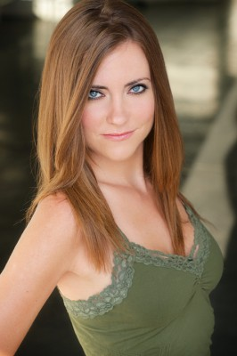 Vanessa Ross als Wine Bar Waitress (uncredited)
- Caelan Scrivener als Homeless Kid (uncredited)
- Jon Komp Shin als Paramedic (uncredited)
- Victor M. Slone als Desheveled Reporter (uncredited)
Datei: X:\2012(G-M)\Knife Fight - Die Gier nach Macht (2012, FSK12, 1920x1080).mkv seit 02.01.2018
Festplatte: HD 2012(A-M)
 Es gibt insgesamt 112 Filme in der Gruppe '2012(G-M)'
Es gibt insgesamt 112 Filme in der Gruppe '2012(G-M)'